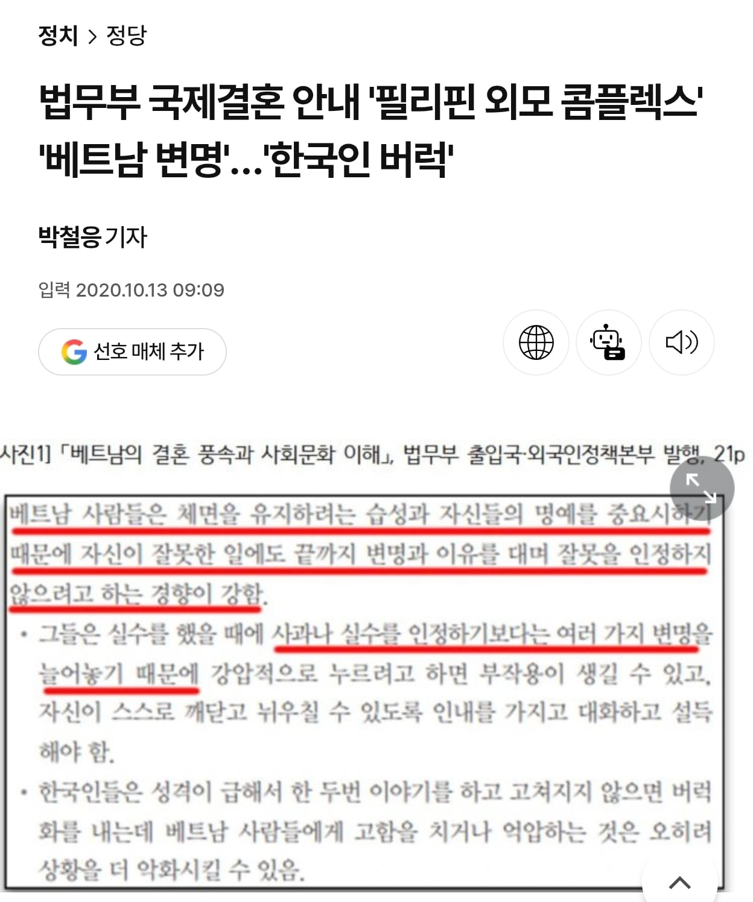

왜는 간사하다 급의
국가 공인 국민성

왜는 간사하다 급의
국가 공인 국민성
이제보나 크래프톤도 머리 뜨거웠을 것 같다
베트남 내 스팀 불법이라 편법으로 온라인대회 리그 개최중이었는데
빡통들이 사과하기싫다고 판키워서 국가리그 하나가 삭제될줄 어케 알았겠어
욕먹더라도 시간 끌면 알잘딱 해결하길 바랬던거같은데
선수는 커녕 매니저, 팀까지 죄 똑같은 놈들이니 ㅋㅋㅋㅋ
원숭이가 어떻게든 이겨보려고 똥을 던져본거지.
원래 하던거니까.
그거 야유받으니까 관람석에 투척 (난데 없이 유럽 리그에도 투척)
이를 사육사인 공산당이 처리함 (격리 조치)
이젠 베트남 발전이 아니고
베트남 온라인 게임도 됩니까? 이게 맞음ㅋㅋ
망고나 따야지. 뭔 E스포츠여
저런 베트콩 미개 토인들을 상대로
60년 전 전투복 입고 용맹하게 싸운 윗 세대 선배들
얼마나 힘들었을지
저 인간이 나한테 야단치네? 어? 열받네...
ㅋㅋㅋㅋㅋ 주나
한국인도 그렇긴한데 정도의차이를 보면 베트남이 더 심한거같긴 하더라
모든 나라가 그렇긴 한데, 저런 습성이 사회주의 국가 저변에 깔려있는듯.
옛날 서독에서 보는 동독 묘사도 저랬고, 지금 북한 묘사도 저럼ㅇㅇ
북한은 당에서 하는말 그대로 따르는게 개븅신새끼라는 인식이 있더만
한국에서 저지랄하는 건 보통 범죄자고 베트남은 국민 대다수가 저 모양 저 꼴이라는 엄청난 차이가 있지
어? 열받네?
어떻게 국가전체가 나르시시스트
벳남애들 일할때 실수하면 그냥 원래 이렇게되어있었다고 시치미떼더라. 그거 당하는 한국사람은 버럭 성질내고,
뭣모르고 그거보는 제3자는 왜 외노자한테 성질을내냐 그러고
베트남여자랑 결혼한 사람들이나
베트남에서 사업중인 한인들 얼마나 힘들까 싶네
유교 국가라면
체면 이전에 염치부터 챙겨야...
인내심을 갖고 기다려주면... 안돼
거짓말슬슬함
혼남 -> 왜 혼났는지 모르겠지만 기분 상함 -> 도리어 성질냄
"방귀뀐놈이 성내면서 계속 뀐다" 이거잖아 그것도 끝까지 쌉소리 곁들여서